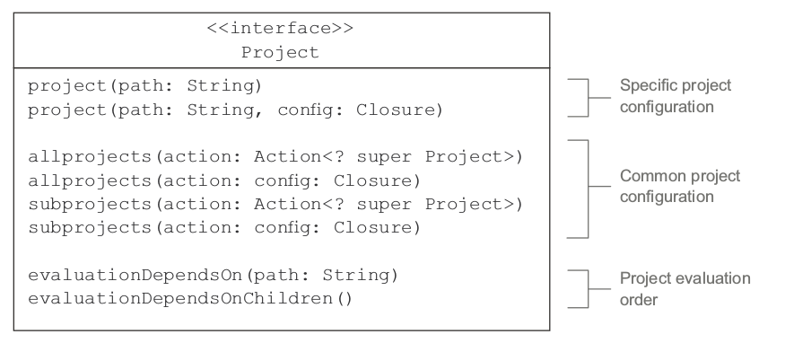
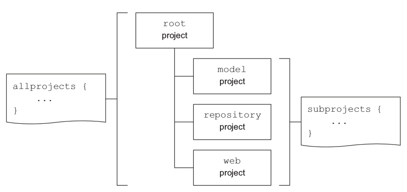

配置子项目
到目前为止你已经把ToDo项目根据功能拆分成多个模块，接下来可以用之前的方法来定义构建逻辑，下面有几点需要主要：
- 根目录和子目录使用相同的group和version属性值
- 所有的子目录都是Java项目需要Java插件来正常工作，所以你只需要在子项目中应用Java插件
- web子项目是唯一一个依赖外部库的项目，它需要打包成WAR而不是JAR
- 子项目之间可以定义模块依赖
接下来你将学习如何定义特定的和共有的构建逻辑，怎么样去避免重复的配置。有些子项目可能依赖其他项目的源代码，比如repository项目依赖model项目，通过声明项目依赖可以避免拷贝源代码。
理解项目的API表示
之前我介绍过项目Project可能会用到的一些API，接下来还有一些API用在多项目构建中。project方法用于声明指定项目的构建代码，需要提供项目的路径，比如:model。有时候你想给所有的项目或者只有子项目定义一些逻辑，你可以使用allprojects和subprojects方法，比如你想给所有的子项目添加Java插件，你需要使用subprojects方法。

定义项目特有的行为
指定项目的行为通过project方法来定义，为了给三个子项目model、repository、web定义构建逻辑，你需要给它们分别创建一个配置块。下面build.gradle文件：
ext.projectIds = ['group': 'com.manning.gia', 'version': '0.1']
group = projectIds.group
version = projectIds.version
project(':model') {
group = projectIds.group
version = projectIds.version
apply plugin: 'java'
}
project(':repository') {
group = projectIds.group
version = projectIds.version
apply plugin: 'java'
}
project(':web') {
group = projectIds.group
version = projectIds.version
apply plugin: 'java'
apply plugin: 'war'
apply plugin: 'jetty'
repositories {
mavenCentral()
}
dependencies {
providedCompile 'javax.servlet:servlet-api:2.5'
runtime 'javax.servlet:jstl:1.1.2'
}
}
从整个项目的根目录那里，你可以执行子项目的任务，需要记住项目路径是通过冒号分隔，比如你想执行model子项目的build任务，在命令行中执行gradle :modle:build就可以，如下所示：
$ gradle :model:build
:model:compileJava
:model:processResources UP-TO-DATE
:model:classes
:model:jar
:model:assemble
:model:compileTestJava UP-TO-DATE
:model:processTestResources UP-TO-DATE
:model:testClasses UP-TO-DATE
:model:test
:model:check
:model:build
声明项目依赖
声明项目依赖和声明外部依赖非常类似，只需要在dependencies配置块中声明，如下所示：
project(':model') {
...
}
project(':repository') {
...
dependencies {
//声明编译期依赖项目model
compile project(':model')
}
}
project(':web') {
...
dependencies {
//声明编译期依赖项目repository
compile project(':repository')
providedCompile 'javax.servlet:servlet-api:2.5'
runtime 'javax.servlet:jstl:1.1.2'
}
}
这样就定义了我们的项目依赖，注意当一个项目依赖于另一个项目时，另一个项目的项目依赖和外部依赖同样会被添加进来，在构建周期的初始化阶段，Gradle决定项目的执行顺序。
从根目录的执行顺序是这样的：

有时候你并不需要重新构建那些并未改变的项目，Gradle提供了部分构建partial builds的选项，通过命令行选项-a或者--no-rebuild。比如你只改变了repository项目不想重新构建model子项目，你可以这样做：gralde :repository:build -a,如下所示：
$ gradle :repository:build -a
:repository:compileJava
:repository:processResources UP-TO-DATE
:repository:classes
:repository:jar
:repository:assemble
:repository:compileTestJava UP-TO-DATE
:repository:processTestResources UP-TO-DATE
:repository:testClasses UP-TO-DATE
:repository:test
:repository:check
:repository:build
定义共同的行为
上面你在所有的子项目中添加了Java插件，给所有的项目添加了一个外部属性ProjectIds,当你的子项目变得比较多的时候这样子做可能是个问题，接下来你可以通过allprojects和subprojects方法来改善你的构建代码。

这是什么意思？这意味着你可以用allprojects方法给所有的项目添加group和version属性，由于根项目不需要Java插件，你可以使用subprojects给所有子项目添加Java插件，如下所示：
allprojects {
group = 'com.manning.gia'
version = '0.1'
}
subprojects {
apply plugin: 'java'
}
project(':repository') {
dependencies {
compile project(':model')
}
}
project(':web') {
apply plugin: 'war'
apply plugin: 'jetty'
repositories {
mavenCentral()
}
dependencies {
compile project(':repository')
providedCompile 'javax.servlet:servlet-api:2.5'
runtime 'javax.servlet:jstl:1.1.2'
}
}